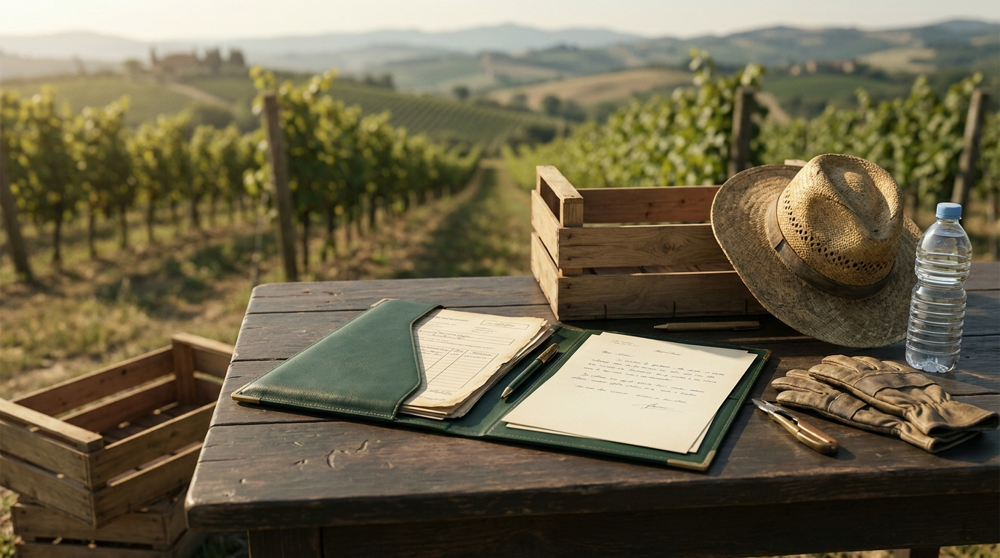

Caporalato in agricoltura: controlli rafforzati nell'estate 2026
L'Ispettorato Nazionale del Lavoro ha avviato una campagna di vigilanza straordinaria contro il caporalato in agricoltura per tutta l'estate 2026. I controlli interessano l'intero territorio nazionale e si concentrano su orari, retribuzioni e condizioni di lavoro. Per le aziende agricole il rischio non è solo amministrativo: lo sfruttamento lavorativo è reato. Vediamo cosa cambia e come muoversi.

Il quadro
Nell'estate 2026 l'Ispettorato Nazionale del Lavoro (INL) ha disposto un'intensificazione dei controlli sul fenomeno del caporalato in agricoltura. La campagna copre l'intero territorio nazionale e si concentra sui periodi di raccolta, quando aumenta il ricorso a manodopera stagionale e cresce il rischio di intermediazione illecita e sfruttamento.
Il caporalato non è una semplice irregolarità contributiva. È un reato che coinvolge tanto chi recluta o gestisce illecitamente la manodopera, quanto l'imprenditore che utilizza quei lavoratori approfittando del loro stato di bisogno.
Inquadramento normativo
La norma di riferimento è l'art. 603-bis del Codice penale, rubricato "Intermediazione illecita e sfruttamento del lavoro". La disposizione, riformata dalla Legge 29 ottobre 2016, n. 199, punisce due condotte distinte: il reclutamento di manodopera per destinarla al lavoro presso terzi in condizioni di sfruttamento, e l'utilizzo o l'impiego diretto di lavoratori in tali condizioni.
La pena prevista è la reclusione da uno a sei anni e la multa da 500 a 1.000 euro per ciascun lavoratore reclutato. In presenza di violenza o minaccia le pene aumentano.
La legge individua quattro indici di sfruttamento: la corresponsione di retribuzioni palesemente difformi dai contratti collettivi o comunque sproporzionate; la violazione reiterata della normativa su orario di lavoro, riposi e ferie; la violazione delle norme su sicurezza e igiene; la sottoposizione a condizioni di lavoro, metodi di sorveglianza o alloggio degradanti. Basta uno di questi elementi, in concreto, perché scattino le verifiche.
Dal lato amministrativo restano applicabili le sanzioni del D.Lgs. 81/2008 in materia di sicurezza e le maxisanzioni per lavoro "in nero" previste dalla normativa vigente.
Implicazioni pratiche
Per l'azienda agricola che impiega manodopera stagionale, la campagna estiva dell'INL significa un'esposizione concreta a verifiche ispettive. È utile chiarire un punto: la responsabilità penale può colpire l'imprenditore anche quando il reclutamento è materialmente gestito da un terzo, se l'azienda utilizza quei lavoratori in condizioni di sfruttamento.
Gli ispettori valutano elementi documentali e fattuali insieme: buste paga, registri presenze, contratti, ma anche le condizioni reali in cui si svolge la prestazione. Una retribuzione formalmente corretta sulla carta non mette al riparo se le ore effettivamente lavorate sono ben superiori a quelle dichiarate.
Le conseguenze non sono solo sanzionatorie. L'art. 603-bis prevede la confisca delle cose servite o destinate a commettere il reato e dei profitti. È inoltre possibile il sequestro dell'azienda con nomina di un amministratore giudiziario, misura che consente la prosecuzione dell'attività ma sotto controllo esterno.
Per i lavoratori, la disciplina prevede tutele specifiche, tra cui il Fondo anti-tratta e, in presenza dei presupposti, il rilascio del permesso di soggiorno per i lavoratori stranieri che collaborano con l'autorità.
Cosa fare in concreto
- Verificate la filiera del reclutamento. Se vi avvalete di intermediari, controllate che siano soggetti autorizzati (agenzie iscritte all'albo informatico) ed evitate ingaggi informali di manodopera.
- Allineate orari e retribuzioni ai CCNL. Documentate con precisione presenze e ore effettive: la discrasia tra dichiarato e reale è il primo indice valutato in sede ispettiva.
- Controllate alloggi e condizioni logistiche. Se fornite vitto o alloggio ai lavoratori stagionali, accertatevi che rispondano a standard dignitosi: l'alloggio degradante è uno degli indici di sfruttamento.
- Aggiornate la documentazione sulla sicurezza. Verificate DVR, formazione e dotazioni antinfortunistiche, soprattutto per le lavorazioni stagionali con personale di nuovo ingresso.
- In caso di accesso ispettivo, fatevi assistere subito. Consigliamo di non rendere dichiarazioni o sottoscrivere verbali senza una verifica delle contestazioni mosse.
In un contesto di vigilanza rafforzata, la prevenzione documentale e organizzativa è lo strumento più efficace per ridurre il rischio. Le verifiche estive non sono un adempimento da rincorrere a posteriori, ma un'occasione per mettere ordine nella gestione del personale stagionale.
Disclaimer
Contributo informativo a cura di Tamburro & Partners - Avv. Giuseppe Tamburro. Non costituisce parere legale.
Ogni storia di lavoro ha i suoi tempi.
Se gestisci HR e vuoi un confronto su contenzioso, ispezioni o licenziamenti, scrivi allo studio. Ti rispondiamo entro un giorno lavorativo.